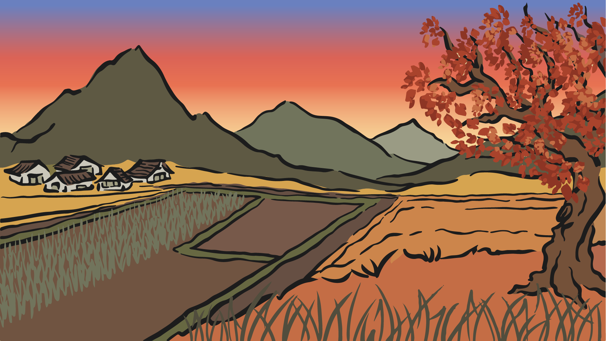
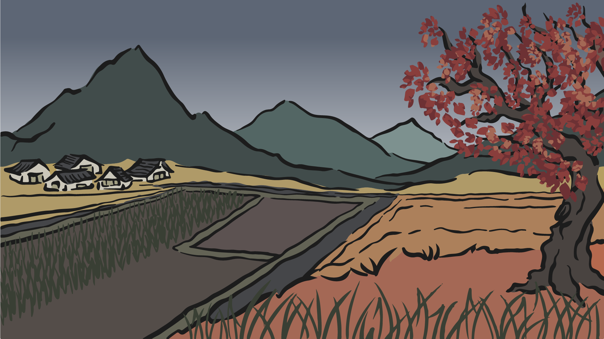
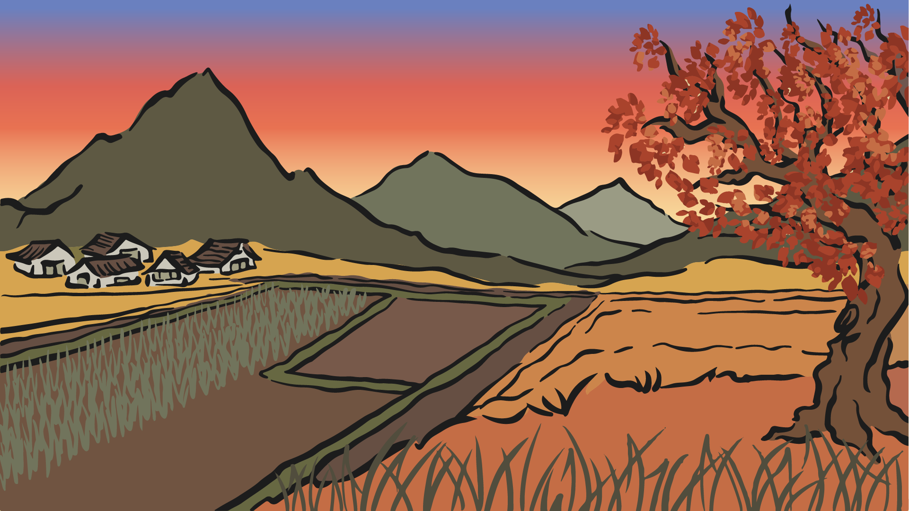
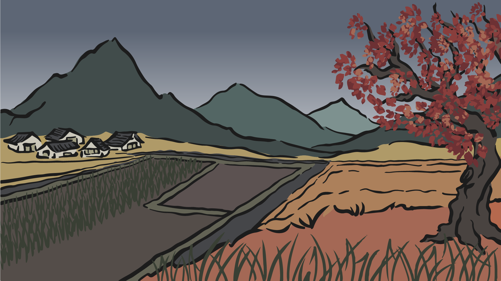
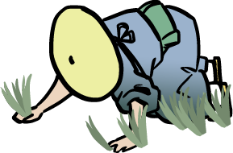
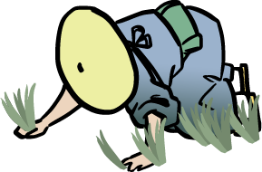

 



Four Seasons of Haiku
Haiku is an ancient form of Japanese poetry that consists of short, unrhymed lines. It uses imagistic language to convey the essence of an experience of nature or the season intuitively linked to the human condition.
Explore the landscape with your mouse to find the hidden haiku
Click on the elements for insights and curiosities
Use the slider to move across different seasons
Setsubun is the day before the beginning of spring in the old calendar in Japan. The name literally means 'seasonal division'. Setsubun is now typically held on February 3rd, with the day after – the first day of spring in the old calendar – known as Risshun. Both Setsubun and Risshun are celebrated yearly as part of the Spring Festival (Haru matsuri) in Japan.
All lovers of wild life can share the grief of the poet as he laments the departure of the wild geese for their nesting grounds. One might ask where is the seasonal reference in this haiku. To the Japanese mind, the flight of the wild·geese from their winter home is a clear reference to spring.
Equally famous as a painter and a poet, Taniguchi Buson (1716-1783) has painted here an exquisite word picture. The fallen cherry blossoms on the water of rice-plant beds are likened by the poet to the stars studding the sky of a bright moonlit night.
Issa (1763-1827), a poor man himself, was pleased to see the beautiful flight of a kite from a lowly hovel, expressive of the hidden desires and ambitions of its occupant.
Working at transplanting rice seedlings in a paddy field with mud up to their knees and much of it splashed on their clothing, arms, and faces, peasant girls may appear most unattractive. However, the age-old songs ther sing as they plant the seedlings by hand are so beautiful and charming that they excite the admiration of the poet. Raizan was born in 1654 and died in 1716.
It is said that one day the poet saw a large frog and a little thin one fighting. To encourage the latter he composed this haiku. Here, Issa shows fellow feeling for the weak. He himself is said to have been a very frail person.
A beautiful word picture which also teaches humans to keep occupied and to be joyful in work. The second line of this Japanese poem can be translated literally, "Singing, singing while flying."
This is said to be Onitsura's first haiku, composed when he was eight. He later developed into a famous poet, entered a Zen monastery, and lived to a great age.
In Japan, the crane, or tsuru, is a national treasure and is considered the bird of happiness. It is depicted in art, literature, and mythology as a symbol of good luck and longevity because it is said to live 1,000 years. Bashō (1644 – 1694) was the most famous poet of the Edo period.
In this haiku by Issa, the sky also prepared for the cold weather. Kobayashi Issa was a poet in the Edo period who used dialect and spoken words for haiku, because he was born in a farmer family, and loved to use the plain and simple words.
A sudden sound is stanting, but when the scarecrow, formerly upright, is found to have fallen, anxious fear is displaced by nervous laughter. Boncho was one of Basho's disciples.
The sharp cry of the night heron emphasizes the solitude of the occasion and the suddenness of the storm. The heron is seen as a special bird in Japan, because it can move between three elements: air, earth, and water. The bird can also be seen as a sign of good luck and a bringer of good harvest.
Hashin (1864-?) was a druggist by profession and a native of Kagawa prefecture. His haiku in seventeen syllables is an excellent word picture of a blinard.
It was believed that the first dream of the New Year, if a good one and if kept to oneself, would come true. Shō-u was born in 1860 and died in 1943.
The midwinter training is traditionally called kangeiko. It is almost an annual ritual. Many schools of karate, judo, aikido, kendo and kyudo do kangeiko every winter, even in fields of snow or at the cold, windy seaside. Kangeiko can be unpleasant, even painful for participants, but it is said to improve mental strength. Mutsuo Takahashi (born December 15, 1937) is one of the most prolific poets of contemporary Japan.

Composed by the poet on seeing a picture of Su Ton P'o, a famous Chinese literary figure, wearing a large hat covered with snow. The general meaning-what is our own never seems burdensome.